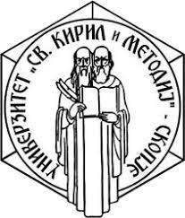

Јас, Александар Сандев, роден сум на 11.11.2002 во Свети Николе, а воедно таму и живеам. Основното училиште
го завршив во ООУ„Кирил и Методиј“ во Свети Николе, а средното во СОУ „Коле Нехтенин“ во Штип.
Моментално сум студент на ФИНКИ во Скопје. Не сум во работен однос и времето го поминувам на
различни начини. Голем дел од времето го поминувам трудејќи се да бидам
продуктивен во било која сфера. Секогаш се трудам работите да ги завршам на време.
Ме интересираат работи како:
- технологии
- мотори и мото-спортови
- фудбал
- автомобили
- видео - игри

Слободното време го поминувам возејќи мотор, забава со пријателите, гледајќи некој спорт и слично.
За време на средното образование бев на практична обука која беше задолжителна и научив нови работи.
Голем интерес имам и кон технологијата и ИТ сферата.